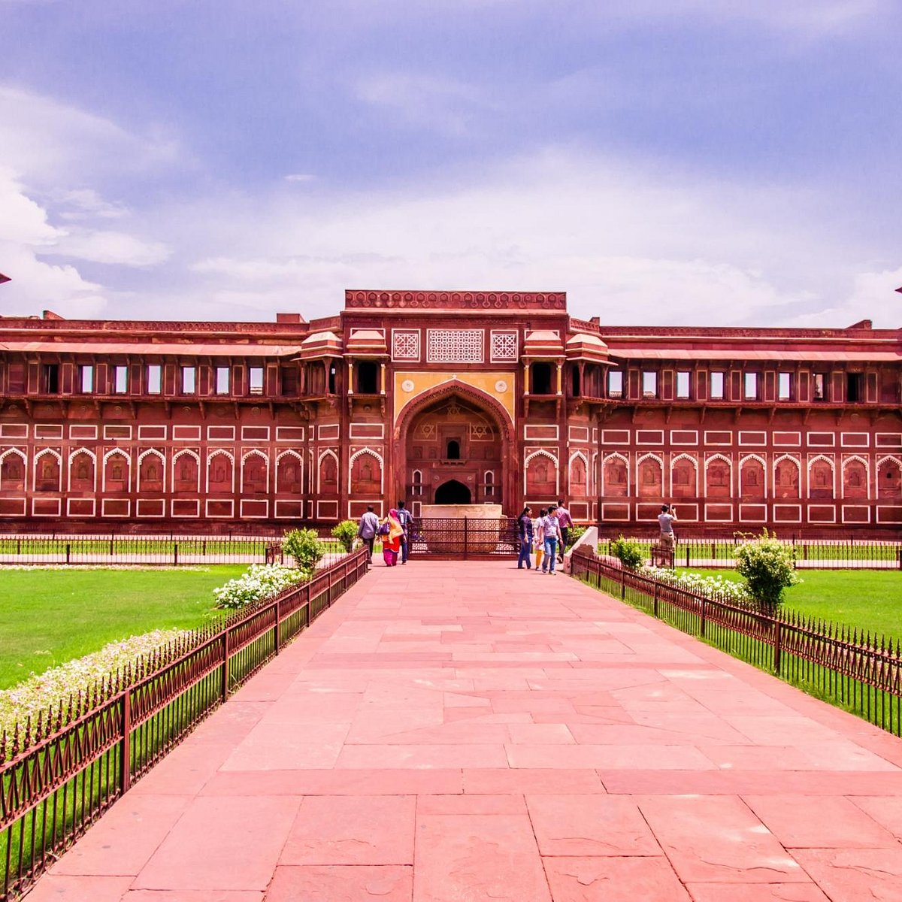
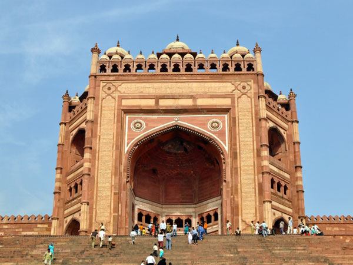
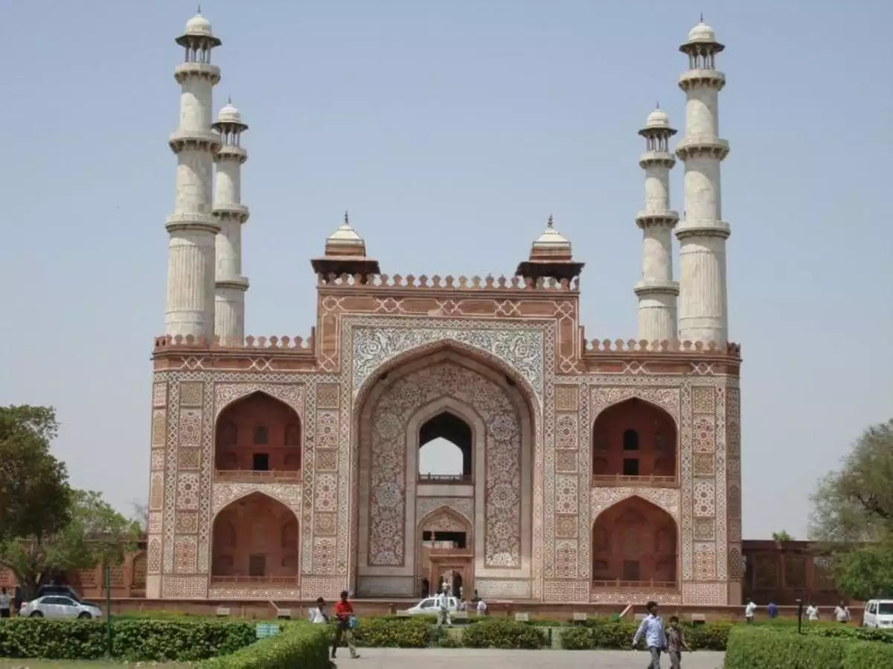
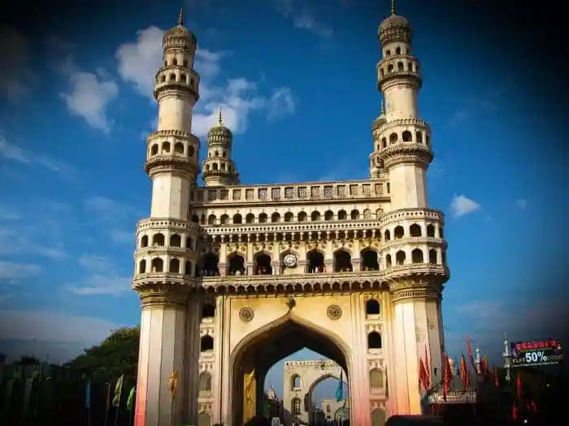
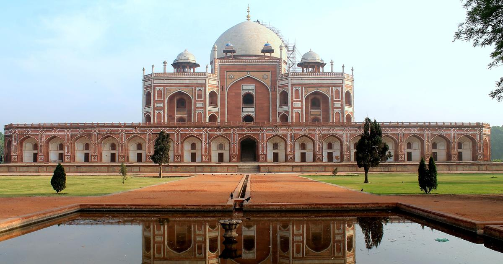
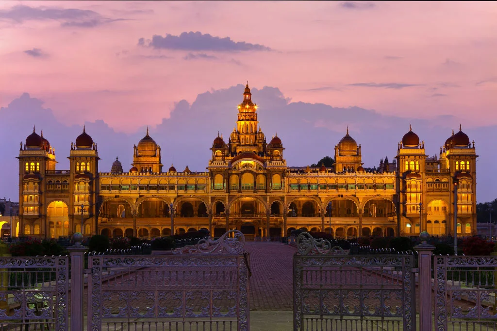

TAJ MAHAL

The Taj Mahal , (meaning Crown of the Palace) is an ivory-white marble mausoleum on the south bank of the Yamuna river in the Indian city of Agra. It was commissioned in 1632 by the Mughal emperor, Shah Jahan (reigned 1628–1658), to house the tomb of his favourite wife, Mumtaz Mahal. The tomb is the centrepiece of a 17-hectare (42-acre) complex, which includes a mosque and a guest house, and is set in formal gardens bounded on three sides by a crenellated wall.
Construction of the mausoleum was essentially completed in 1643 but work continued on other phases of the project for another 10 years. The Taj Mahal complex is believed to have been completed in its entirety in 1653 at a cost estimated at the time to be around 32 million rupees, which in 2015 would be approximately 52.8 billion rupees (US$827 million). The construction project employed some 20,000 artisans under the guidance of a board of architects led by the court architect to the emperor, Ustad Ahmad Lahauri.
The Taj Mahal was designated as a UNESCO World Heritage Site in 1983 for being "the jewel of Muslim art in India and one of the universally admired masterpieces of the world's heritage". Described by Nobel laureate Rabindranath Tagore as "the tear-drop on the cheek of time", it is regarded by many as the best example of Mughal architecture and a symbol of India's rich history. The Taj Mahal attracts 7–8 million visitors a year. In 2007, it was declared a winner of the New7Wonders of the World (2000–2007) initiative.
AGRA FORT
Agra Fort is a historical fort in the city of Agra in India. It was the main residence of the emperors of the Mughal Dynasty till 1638, when Mughal capital was shifted from Agra to Red Fort in Delhi. It is also a UNESCO World Heritage site and is about 2.5 km northwest of its more famous sister monument, the Taj Mahal. The fort can be more accurately described as a walled city.
FATEHPUR SIKRI
Fatehpur Sikri , is a city in the Agra District of Uttar Pradesh, India. The city was founded in 1569 by the Mughal Emperor Akbar, and served as the capital of the Mughal Empire from 1571 to 1585, when it was abandoned. After his military victories over Chittor and Ranthambore, Akbar decided to shift his capital from Agra to a new location 23 miles (37 km) west south-west , to honour the Sufi saint Salim Chishti. Here, he commenced the construction of a planned walled city, which took the next fifteen years in planning and construction, with a series of royal palaces, harem, courts, a mosque, private quarters and other utility buildings. He named the city Fatehabad, with Fateh, a word of Arabic origin in Persian, meaning "victorious." It was later called Fatehpur Sikri. It is at Fatehpur Sikri that the legends of Akbar and his famed courtiers, the nine jewels or Navaratnas, were born. Fatehpur Sikri is one of the best preserved examples of Mughal architecture in India.
According to contemporary historians, Akbar took a great interest in the building of Fatehpur Sikri and probably also dictated its architectural style. Seeking to revive the splendours of Persian court ceremony made famous by his ancestor Timur, Akbar planned the complex on Persian principles. But the influences of his adopted land came through in the typically Indian embellishments. The easy availability of sandstone in the neighbouring areas of Fatehpur Sikri also meant that all the buildings here were made of the red stone. The Imperial Palace complex consists of a number of independent pavilions arranged in formal geometry on a piece of level ground, a pattern derived from Arab and central Asian tent encampments. In its entirety, the monuments at Fatehpur Sikri thus reflect the genius of Akbar in assimilating diverse regional architectural influences within a holistic style that was uniquely his own.
The Imperial complex was abandoned in 1585, shortly after its completion, due to the exhaustion of the small, spring-fed lake that supplied the city with water, and its proximity with the Rajputana, with which the Mughal Empire was often at war. Thus the capital was shifted to Lahore so that Akbar could have a base in the less stable part of the empire, before moving back to Agra in 1598, where he had begun his reign as he shifted his focus to Deccan. In fact, he never returned to the city except for a brief period in 1601.
AKBAR'S Tomb
Akbar's tomb is the tomb of the Mughal emperor, Akbar and an important Mughal architectural masterpiece. It was built in 1605–1613 and is situated in 119 acres of grounds in Sikandra, a suburb of Agra, Uttar Pradesh, India. The tomb of Akbar was built by his son prince Salim i.e Jahangir. Akbar planned the tomb and selected a suitable site for it. After his death, Akbar's son Jahangir completed the construction in 1605–1613. It is located at Sikandra, in the suburbs of Agra, on the Mathura road (NH2), 8 km west-northwest of the city center. About 1 km away from the tomb, lies Mariam's Tomb, the tomb of Mariam-uz-Zamani, wife of the Mughal Emperor Akbar and the mother of Jahangir.
Akbar was one of the greatest emperors in the history of India. However, during the reign of His great-grandson, Aurangzeb, the rebellious Jats under the leadership of Raja Ram Jat, ransacked the intricate tomb, plundered and looted all the beautiful gold, jewels, silver and carpets, whilst destroying other things. He even, in order to avenge his father Gokula's death, plundered Akbar's tomb, looted it and dragged Akbar's bones and burned them in retaliation. He was later sentenced to death by Aurangzeb.
The Tomb suffered a lot, until extensive repair was carried out by the British under Lord Curzon. The neighbouring Taj Mahal was also looted, and two of Agra's gates were taken away.
KONARK SUN TEMPLE

Konark Sun Temple is a 13th-century CE (year 1250) Sun temple at Konark about 35 kilometres (22 mi) northeast from Puri city on the coastline in Puri district, Odisha, India. The temple is attributed to king Narasimhadeva I of the Eastern Ganga dynasty about 1250 CE. Dedicated to the Hindu Sun God Surya, what remains of the temple complex has the appearance of a 100-foot (30 m) high chariot with immense wheels and horses, all carved from stone. Once over 200 feet (61 m) high, much of the temple is now in ruins, in particular the large shikara tower over the sanctuary; at one time this rose much higher than the mandapa that remains. The structures and elements that have survived are famed for their intricate artwork, iconography, and themes, including erotic kama and mithuna scenes. Also called the Surya Devalaya, it is a classic illustration of the Odisha style of Architecture or Kalinga architecture.
VICTORIA MEMORIAL

The Victoria Memorial is a large marble building on the Maidan in Central Kolkata, having its entrance on the Queen's Way. It was built between 1906 and 1921 by the British government. It is dedicated to the memory of Queen Victoria, Empress of India from 1876 to 1901. It is the largest monument to a monarch anywhere in the world, it stands in 64 acres of gardens and is now a museum under the control of the Ministry of Culture.Possessing prominent features of the British architecture of the colonial era, it has evolved into one of the most popular places in the city.
HAWA MAHAL

The Hawa Mahal is a palace in the city of Jaipur, India. Built from red and pink sandstone, it is on the edge of the City Palace, Jaipur, and extends to the Zenana, or women's chambers. The structure was built in 1799 by the Maharaja Sawai Pratap Singh, grandson of Maharaja Sawai Jai Singh, the founder of the city of [jhunjhunu Rajasthan ]. He was so inspired by the unique structure of Khetri Mahal that he built this grand and historical palace. It was designed by Lal Chand Ustad. Its five-floor exterior is akin to a honeycomb with its 953 small windows called Jharokhas decorated with intricate latticework.The original intent of the lattice design was to allow royal ladies to observe everyday life and festivals celebrated in the street below without being seen. This architectural feature also allowed cool air from the Venturi effect to pass through, thus making the whole area more pleasant during the high temperatures in summer. Many people see the Hawa Mahal from the street view and think it is the front of the palace, but it is the back.
CHARMINAR
The Charminar is a monument located in Hyderabad, Telangana, India. Constructed in 1591, the landmark is a symbol of Hyderabad and officially incorporated in the emblem of Telangana. The Charminar's long history includes the existence of a mosque on its top floor for more than 425 years. While both historically and religiously significant, it is also known for its popular and busy local markets surrounding the structure, and has become one of the most frequented tourist attractions in Hyderabad. Charminar is also a site of numerous festival celebrations, such as Eid-ul-adha and Eid al-Fitr, as it is adjacent to the city's main mosque, the Makkah Masjid. The Charminar is situated on the east bank of Musi River. To the west lies the Laad Bazaar, and to the southwest lies the richly ornamented granite Makkah Masjid. It is listed as an archaeological and architectural treasure on the official list of monuments prepared by the Archaeological Survey of India. The English name is a translation and combination of the Urdu words chār and minar or meenar, translating to "Four Pillars"; the eponymous towers are ornate minarets attached and supported by four grand arches.
HUMAYUN'S TOMB
Humayun's tomb (Persian: Maqbara-i Humayun) is the tomb of Humayun in Delhi, India.The tomb was commissioned by Humayun's first wife and chief consort, Empress Bega Begum under her patronage in 1558, and designed by Mirak Mirza Ghiyas and his son, Sayyid Muhammad,Persian architects chosen by her. It was the first garden-tomb on the Indian subcontinent,[10] and is located in Nizamuddin East, Delhi, India, close to the Dina-panah Citadel, also known as Purana Qila (Old Fort), that Humayun found in 1538. It was also the first structure to use red sandstone at such a scale. The tomb was declared a UNESCO World Heritage Site in 1993,[10] and since then has undergone extensive restoration work, which is complete.Besides the main tomb enclosure of Humayun, several smaller monuments dot the pathway leading up to it, from the main entrance in the West, including one that even pre-dates the main tomb itself, by twenty years; it is the tomb complex of Isa Khan Niyazi, an Afghan noble in Sher Shah Suri's court of the Suri dynasty, who fought against the Mughals, constructed in 1547 CE.
MYSORE PALACE
Mysore Palace, also known as Amba Vilas Palace, is a historical palace and a royal residence (house). It is located in Mysore, Karnataka, India. It used to be the official residence of the Wadiyar dynasty and the seat of the Kingdom of Mysore. The palace is in the centre of Mysore, and faces the Chamundi Hills eastward. Mysore is commonly described as the 'City of Palaces', and there are seven palaces including this one. However, the Mysore Palace refers specifically to the one within the new fort. The land on which the palace now stands was originally known as mysuru (literally, "citadel"). Yaduraya built the first palace inside the Old Fort in the 14th century, which was set ablaze and reconstructed multiple times. The Old Fort was built of wood and thus easily caught fire, while the current fort was built of stone, bricks and wood. The current structure was constructed between 1897 and 1912, after the Old Palace burnt down, the current structure is also known as the New Fort. Mysore Palace is one of the most famous tourist attractions in India, after the Taj Mahal, with more than six million annual visitors.